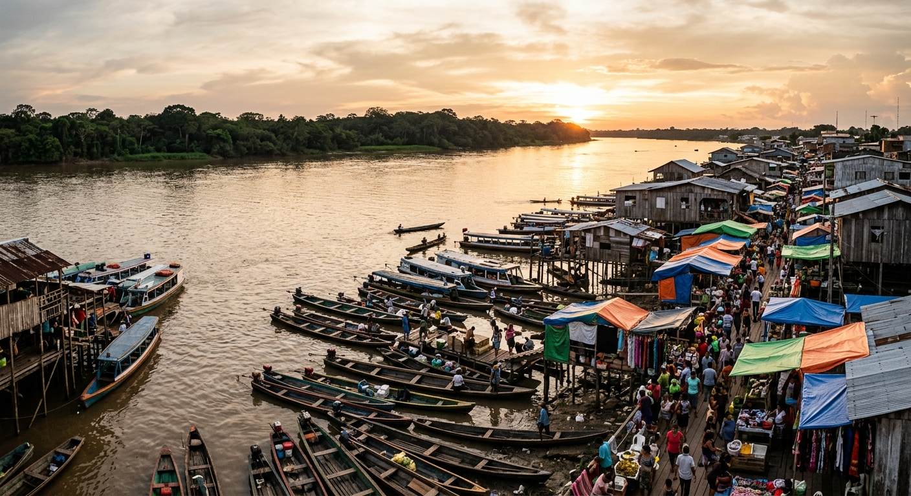
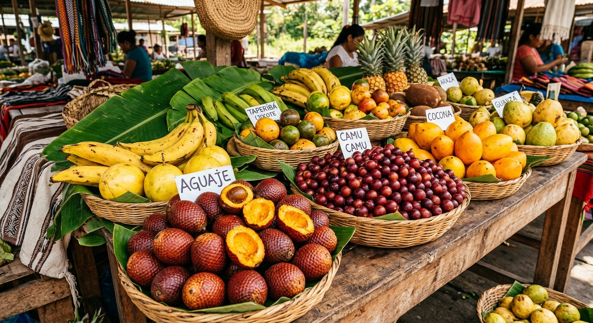

Welcome to the Flavors of the Amazon
Located where the Amazon River begins, Iquitos offers a culinary world unlike anywhere else in Peru. Influenced by river life, tropical fruits, and indigenous traditions, Amazonian food is bold, fresh, and deeply comforting. Whether you are walking down the Malecón at sunset or exploring a bustling morning market, every dish tells a story of the rainforest.
Explore DishesWhy Amazonian Cuisine is Unique
Unlike coastal Peruvian food known for ocean ceviche, jungle cuisine celebrates freshwater river fish like paiche, smoky grilled meats, sweet plantains, and exotic fruits such as camu camu and aguaje. Meals are wrapped in banana leaves, cooked over open wood fires, and served with tangy cocona chili sauces.
